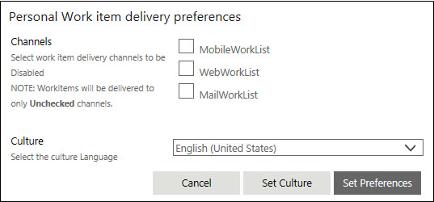

No
Work Items List Toolbar
The Work items list toolbar has options that enable users to manage how work items are delivered, when they are delivered and to assign alternate actors in their absence. An additional option for queue enables queue owners to access the settings to their queues.
- Show Queue: This option opens the appropriate Queue Control window for the folder from which it is accessed. To open the main Queue Management window with the list of all queues, select Inbox and click the Show queue icon. To open the Participants Tab window for a queue, select the queue folder and click the icon.
- Show alternate actor: This option opens the Alternate Actors setting window, which can also be accessed from the Process Designer. See Alternate Actors for more details.
- Show resource calendar: This option opens the Resource Calendar window for the active resource. You can set the resource calendar preferences here. See Resource Calendar for more details.
- Set preferences: This option allows actors to set preferences for the delivery of work items. It opens the Personal Work item delivery preferences window, where you can disable the delivery channels that you do not wish to receive the work items on.
- To disable a channel, select the check box corresponding to it. For example, if you are traveling and may not have access to the web, select the WebWorkList option to stop work items from being delivered in the Work items list. Click Set Preferences to save.
This option also allows users to specify the language settings for the user interface. In Select the culture language, select the language. Click Set Culture to set the language preference.

Note: The Culture drop-down displays a list of languages. However, for the preference to take effect, the language strings for the corresponding language must be available in AVEVA Work Tasks folders. AVEVA Work Tasks does not provide default support for all languages in the drop-down.
Enable Multi Select - The Enable Multi Select button provides users with options of acting on items as a batch. An additional option is made available when the items are grouped.
The Multi Select option is not supported for Resource Set activity, Information activity, and InvokeForm activity.